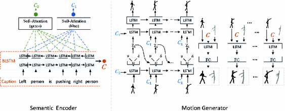

|
I am a Researcher at Tencent Youtu Lab, where I work on computer vision and machine learning. And my research interests are face anti-spoofing, deepfake detection and adversial attack. I got my bachelor's degree in Nanjing University (2012~2016) and master degree in Shanghai Jiaotong University (2016~2019). We are hiring self-motivated interns on computer vision, especially trustworthy biometrics (e.g., face anti-spoofing detection, deepfake detection, adversial attack, etc). Please send me your CV if you are interested. Email / Google Scholar / Github / |
{kind=link}
Recent news
07/2021 – 1 papers accepted by NIPS'22, with the acceptance rate to be 25%
11/2020 – Our Team won the first place in ASIC: artificial intelligence security competition
07/2021 – 4 papers accepted by ECCV'22, with the acceptance rate to be 26%
07/2021 – 1 papers accepted by ACM MM'22, with the acceptance rate to be 27.9%
07/2021 – 1 papers accepted by IJCAI'22, with the acceptance rate to be 15%
07/2021 – 2 papers accepted by CVPR'22, with the acceptance rate to be 25.33%
07/2021 – 3 papers accepted by AAAI'22, with the acceptance rate to be 15%
07/2021 – 2 papers accepted by ICCV Workshop'21
07/2021 – Our Team won the third place in Remote Physiological Signal Sensing (RePSS) Challenge(ICCV2021)
07/2021 – Our Team won the second place in 3D High-Fidelity Mask Attack Detection Challenge(ICCV2021)
07/2021 – 2 papers accepted by ACM MM'21, with the acceptance rate to be 27.9%
07/2021 – 1 papers accepted by IJCB'21, with the acceptance rate to be 39.2%
04/2021 – 2 papers accepted by IJCAI'21, with the acceptance rate to be 13.9%
03/2021 – 1 papers accepted by CVPR'21, with the acceptance rate to be 23.7%
12/2020 – 2 papers accepted by AAAI'21, with the acceptance rate to be 21%
11/2020 – Our Team won the fourth place in CelebA-Spoof: Face Anti-Spoofing Challenge (ECCV20)
11/2020 – Our Team won the second place in DeeperForensics Challenge(ECCV20)
06/2020 – Our Team won the gold medal in Deepfake Detection Challenge
06/2020 – 1 papers accepted by ICONIP'20, with the acceptance rate to be 29%
07/2020 – 1 papers accepted by ECCV'20, with the acceptance rate to be 27%
12/2018 – 1 papers accepted by PCM'18
02/2018 – 1 papers accepted by CVPR'18
Preprints (* equal contribution, # corresponding author)
|
J. Zhang, Y. Tai, T. Yao, J. Meng, S. Ding, C. Wang, J. Li, F. Huang and R. Ji. arXiv, 2021 arXiv | |

|
S. Chen, T. Yao, S. Ding, J. Li, F. Huang and R. Ji. arXiv, 2021 arXiv |
Publications (* equal contribution, # corresponding author)
|
H. Gu*, C. Yang*, T. Yao*#, S. Ding, J. Li, Y.Huang and Z. Ma. ACM International Conference on Multimedia. (ACM MM), 2021 Paper (Official) |
K. Zhang*, T. Yao, J. Zhang, S. Liu, S. Ding, J. Li, Y.Huang. ACM International Conference on Multimedia. (ACM MM), 2021 Paper (Official) |
S. Liu*, K. Zhang*, T. Yao*#, S. Ding, J. Li, Y.Huang, Y.xie and Z. Ma. International Joint Conference on Biometrics. (IJCB), 2021 Paper (Official) |
Y. Bang*, X. Wang*, T. Yao*#, J.Guo, Z. Kun, S. Ding, J. Li, and C. Liu. International Joint Conferences on Artificial Intelligence (IJCAI), 2021 Paper (Official) |
S. Liu*, Y. Zhang*, T. Yao*#, K. Sheng, S. Ding, Y. Tai, Y. Xie , and Z. Ma. International Joint Conferences on Artificial Intelligence (IJCAI), 2021 Paper |
W. Wang*, B. Yin*, T. Yao*#, L. Zhang, Y. Fu, S. Ding, J. Li, X. Xue and F. Huang. Computer Vision and Pattern Recognition (CVPR), 2021 Paper |
S. Chen*, T. Yao*, Y. Chen, S. Ding, J. Li, and R. ji. AAAI Conference on Artificial Intelligence (AAAI), 2021 Paper |
Z. Chen*, T. Yao*, K. Sheng, S. Ding, Y. Tai, J. Li, F. Huang, and X. Jin. AAAI Conference on Artificial Intelligence (AAAI), 2021 Paper |
 |
X. Wang, T. Yao, S. Ding, and L. Ma. International Conference on Neural Information Processing (ICONIP), 2020 Paper |
K. Zhang*, T. Yao*, J. Zhang, Y. Tai, S. Ding, J. Li, F. Huang, H. Song and L. Ma. European Conference on Computer Vision (ECCV), 2020 Paper (Official) |
 |
Z. Wang, T. Yao*, H. Wei, S. Guan and B. Ni. Pacific-Rim Conference on Multimedia(PCM), 2018 Paper (Official) |
T. Yao*, M. Wang, B. Ni, H. Wei, and X. Yang. Computer Vision and Pattern Recognition (CVPR), 2018 Paper (Official) |
Awards
Second Place of ECCV 2020 Challenge on DeeperForensics Challenge (Team name: RealFAce)
Fourth Place of ECCV 2020 Challenge on CelebA-Spoof Face Anti-Spoofing Challenge
Gold Medal of Kaggle Challenge on Deepfake Detection Challenge
2019, 2020, 2022 Outstanding Staff Award, Tencent
Activities
优Tech分享 “人脸安全技术的研究与应用”
Opensource
|
Last modified in Apr. 2021.
For the style of my personal website, Please refer to the wonderful page from Jon Barron.
|